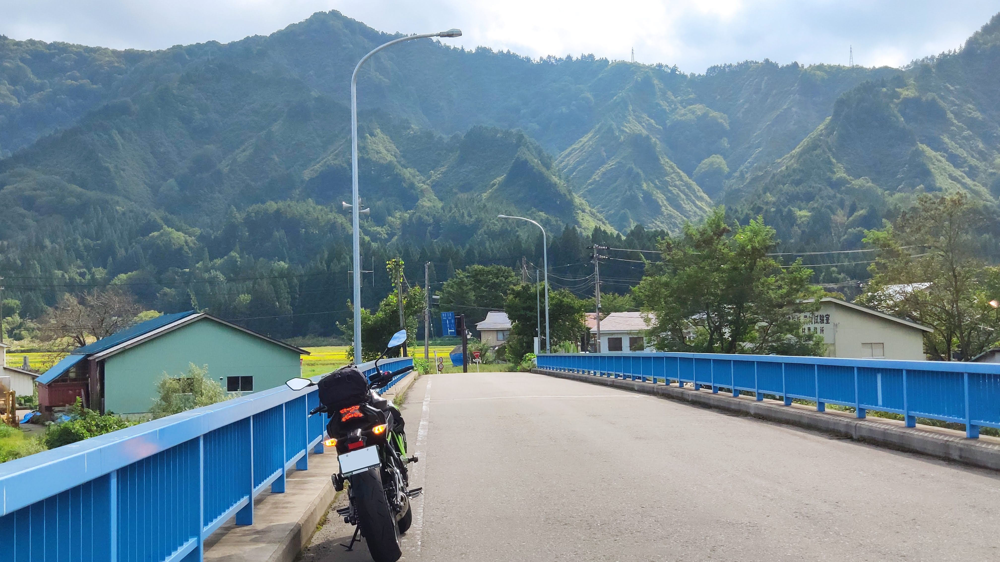
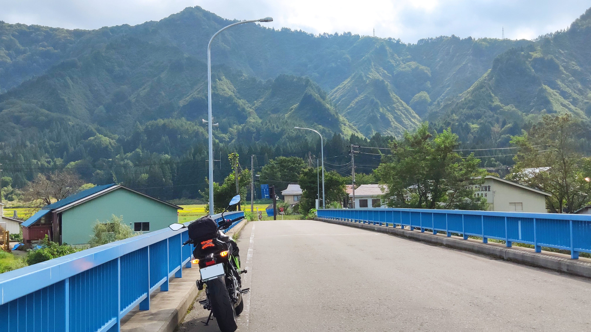

Oszkar Jozsa
I create the brains of cars and robots.
I am a product and technical lead, manager, and engineer with over 13 years of experience in product and people management, software engineering, research.
I worked in various environments; early-stage startup, mid-size company, goverment, multinational corporations. My current interest are autonomy, spacecrafts, home automation and the software that drives these. I'm also interested in deep tech startups and disruption. During the past few years I've been focusing on growing experience in product and people management. I have experience in growing teams from 1 to 40+ and delivering products from scratch to $100M+ in revenue both as an engineer and as product manager.
I love clean code, beautifully architected software, and comprehensive documentation. Though not actively coding at the moment, I still consider myself as an engineer but I am strategically trying myself in various roles to expand my skills and experience. As a bit of a joker, I always try to bring cheer and fun to my teams.
Experience
Senior Product Manager
I am working on Woven's Arene, Toyota's next generation software platform and development tooling. This is my first time in a product role where my responsibilities include interfacing with the customers and adjacent teams, roadmap planning, requirements management and supporting our scrum process. I am currently owning a product portfolio that has over a thousand users and used not only internally at Woven and Toyota but at 3rd party supply chain as well. The 2 main areas I focused so far at Woven:
- 3D Simulation for ADAS testing and validation- Software automation (CI) and developer tooling for building, testing and deploying both in-vehicle and out-of-vehicle code
Engineering Lead
I was leading 3 client-facing projects on the order of few hundred thousand to 1.5 million dollars. I'm was charge of planning, project management, hiring and also contribute to development and serve as a scrum master for my team. My area of focus was automation in construction and warehouses (automated forklifts). My team was involved with multiple sub-projects ranging from perception/ML to customizing our SaaS/PaaS cloud backend to our customers' needs. I was also responsible for some of our product management work and hiring.
Senior Engineering Lead / Engineering Manager
I was leading the self-driving vehicle department, being involved both in the technical and the operations/management side of the organization. I was acting both as an Engineering Manager for a multidisciplinary team and as a Technical Program Manager of our self-driving vehicle and simulation development. My roles at Ascent also covered a range of software development and software management tasks, including: SW architecture design, budgeting, helping out ML research, robotics software development, systems engineering, self-driving operation management, field testing, code reviewing, roadmap planning and technical hiring. Throughout all my positions at Ascent, I've been directly reporting to the CTO and CEO.
Technical Lead / Engineering Manager
I was leading the growing automotive (self-driving) teams of Ascent Robotics while the organization was expanding after our Series A investment. I was managing the vehicle robotics team, infrastructure team and software tools team. I was leading 30+ people in a constantly evolving environment and served as an interim CTO for a while while also still actively participating in development and code reviews.
Senior Robotics Engineer
I was leading a team of 5-7 engineers, developing the core framework of our deep learning and robotics platform and designed our self-driving R&D car platform (Lexus RX450h). I led HW and SW architecture design, software engineering, technical hiring and project management. Additional to this, I was also working on financial intelligence projects as a software engineer.
Robotics Engineer
I joined Ascent Robotics as the company's 2nd engineer. I was actively participating in shaping the company from the beginning, both on the code/architecture and on the organizational level. My initial tasks involved computer vision and software prototype development, architecture design and tech pitch to investors and potential partners.
Software Engineer
I worked on the then next-generation RoboTaxi, ZMP's self driving platfrom. I mostly worked on computer vision and robotic system software development. I also participated in systems setup, sensor calibation and testing the self-driving car both on the test track and in traffic. Briefly I also worked on the company's delivery robot platform.
Software Engineer
I worked on industrial vision software and SDKs (Cognex VisionView, Cognex Designer) the company ships with their camera systems. I mostly worked in C# and TypeScript with some JavaScript and C++. In most of my time at the company I was responsible for HMI framework design and implementation, script parsing, object serialization-deserialization, automatic code generation and software licensing. The products I worked on have a combined sales volume over $100M.
Associate Software Engineer
Research Intern / Contractor
I joined as an intern and stayed at the Academy as a contractor Research Engineer. I was part of the Machine Perception Research Laboratory research group and worked on 2D and 3D computer vision, image processing and 3D object recognition and registration in Point Clouds. Most of my work was related to object detection, segmentation and scene understanding in lidar point clouds.
Education
Georgia Institute of Technology
Remote studies. I dropped out because of my demanding startup work.
Budapest University of Technology and Economics
I took a vide array of classes including Electrical and Mechanical Engineering classes to explore my interests. I also won two scholarships (see below).
Florida Institute of Technology
I won an EU scholarship (STARS - Sensing Technology and Robotics Scholarship) to spend a year in the US. During the year I was able to complete all Florida Tech courses that were disjunct from my program and gradudated both at Florida Tech and my home institute.
Aquincum Institute of Technology
I was awarded an opportunity to take courses at Gabor Bojar's private college. I took courses in computer vision, computational biology, enterpreneurship and UX
Skills
- Experience in leadership at a growth stage startup and in rapidly changing environments
- Experience in product management at a large organization
- Experience with vast array or software and product management tools (GitHub, BitBucket, Confluence, Jira, Aha!, Wrike, LiquidPlanner, Trac, MS Exchange) and automation tools (GHA, Jenkins, CircleCI, TeamCity)
- Strong sense and preference in well-crafted architecture, beautiful code and comprehensive documentation
- Experience in writing research papers and patents as well as user-facing documentation
- Practical knowlege in machine learning (both traditional methods and modern deep learning, reinforcement learning)
- I am a strong team player. I like to work on the product and/or architecture level and and focus on the bigger picture instead of a single piece.
- C++
- Python
- C#
- TypeScript
- I also dabble some JavaScript, Rust and MATLAB
- Computer vision libraries (OpenCV, PCL, PIL)
- TensorFlow, Pytorch and OpenAI tools (gym, baselines)
- Python data science/machine learning stack (numpy, pandas, matplotlib, scikit)
- C++ STL, Boost, Qt
- ROS, OROCOS
- Dev tooling: git, UML
- DevOps tooling: docker, datadog, kubernetes, jenkins/travis
Interests
When not working, I enjoy traveling, taking photos of random things, exploring the city, trying new food places or riding my motorbike.
My technical interests outside of work are home automation, space exploration, airplanes, cars and motorbikes.
 
